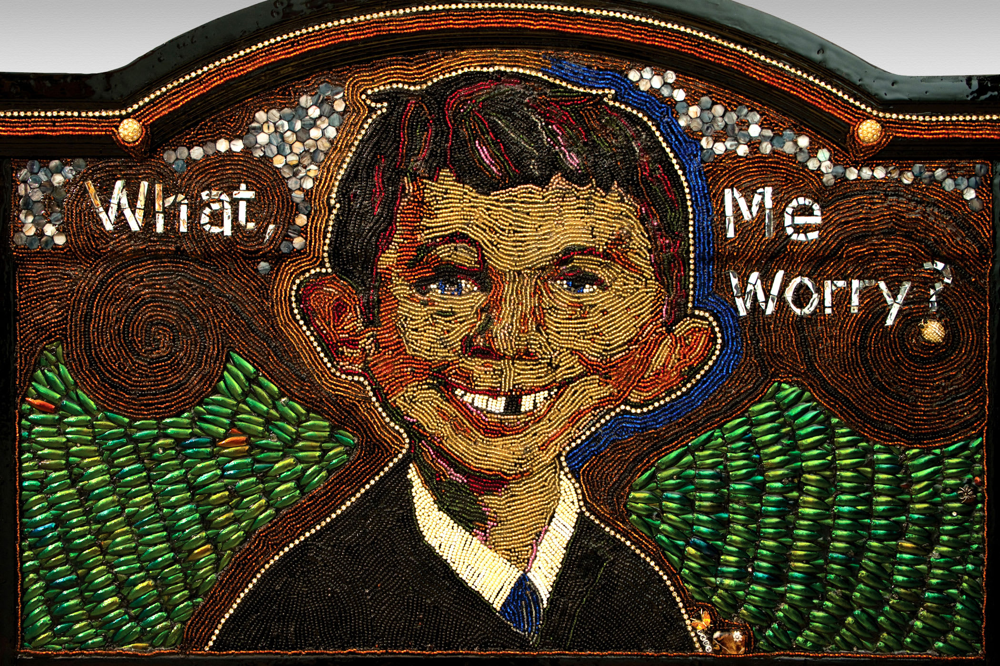

Outsider Artist
Visionary • Outsider • Artist
This site preserves the archived work of Patty Kuzbida and keeps every major route from the original Wix website available on a simple static stack.

Collections & Pages


From The Original Site
Routes migrated: Home, About, AVAM Collection, Other Works, The Wall, Videos, Blog, and all blog post URLs.